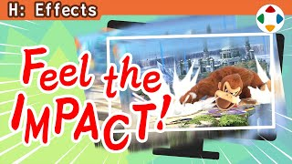
速览
让画面震动非常适合表现巨大冲击，应该积极加入；樱井从《梦之泉物语》起就支持并重视它。但可能让画面难以看清，要注意别过度。方法大致有两种：移动摄像机与移动绘制后的画面。前者是在 3D 空间里移动摄像机，远处的画面可能几乎不动；后者整个画面都会确实地晃动，包括 UI 也一起晃，但要考虑晃动的部分会在画面边缘露出黑边。常用的是前者，但在有纵深的画面中可能几乎不晃，所以要考虑注视点（摄像机看着的点）怎么动：可以与摄像机同步震动，甚至比摄像机动得更大——远处的注视点稍微动一下，看起来并不怎么动。《大乱斗》的画面震动有几种模式和功夫：一直以来可以设定大、中、小、极小以及持续等模式；大中小不只是缩放，震动模式本身也不同：小只有纵向震动，中加入横向，大差别也许不明显但更强；持续性震动是传达地形震动等的纵向震动——地震之类最好不要纵横乱晃。实现上的功夫：按镜头远近改变震动大小，为了没有违和感，也会影响画角，调整到哪里都恰到好处；例如平面世界等部分舞台画角收得很窄，直接用震动会很大，所以要调整。震动做成一开始强、逐渐收敛，不是单纯的漩涡形，而是带有舒适程度的随机性；以前还曾用鼠标乱晃一通、以那个动作为基础来做。没有画面震动的游戏相当乏味，连攻击时的小震动都会造成这么大的印象差。画面震动常出现、效果也高；多边形表现中要得到合适的震动有点难，但手感会大增，下功夫很重要。
1. 画面震动的价值 0:03
画面震动非常适合表现巨大冲击，应该积极加入。樱井从《梦之泉物语》起就支持并重视它。
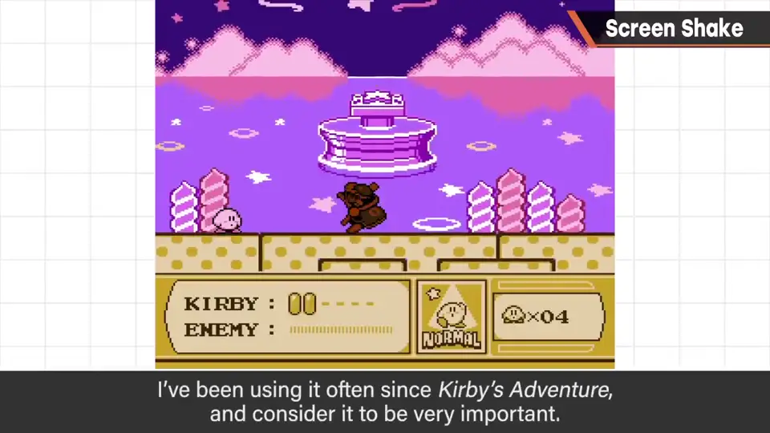
2. 两种方法 0:27
- 移动摄像机：在 3D 空间里移动摄像机，远处的画面可能几乎不动。
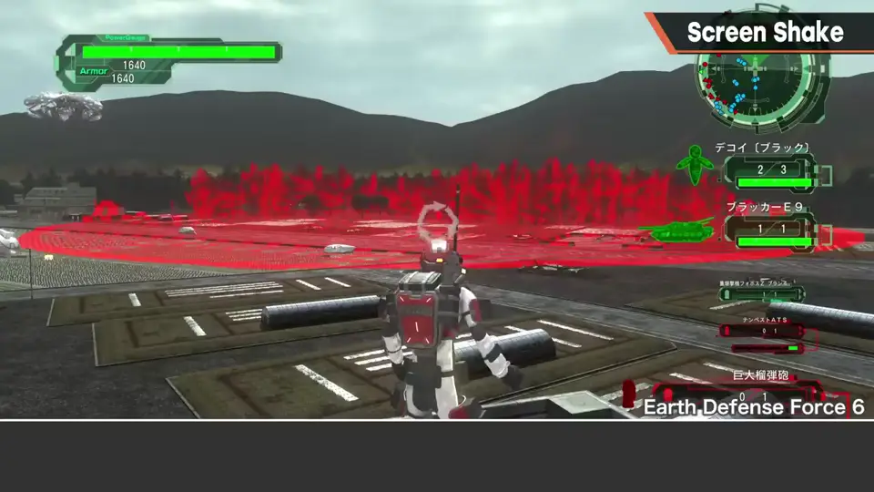
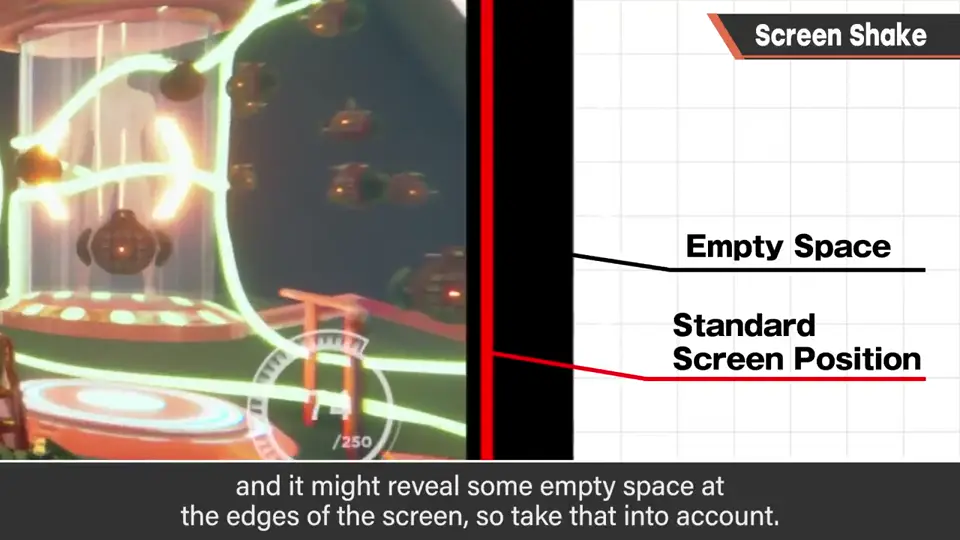
- 移动绘制后的画面：全画面（含 UI）都确实地晃，但边缘可能露出黑边。
常用的是前者，但纵深大的画面中可能几乎不晃，所以要考虑注视点怎么动。
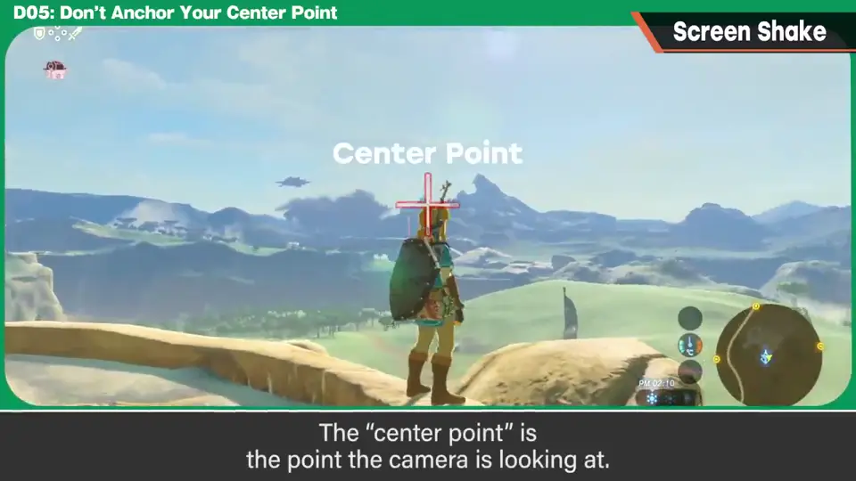
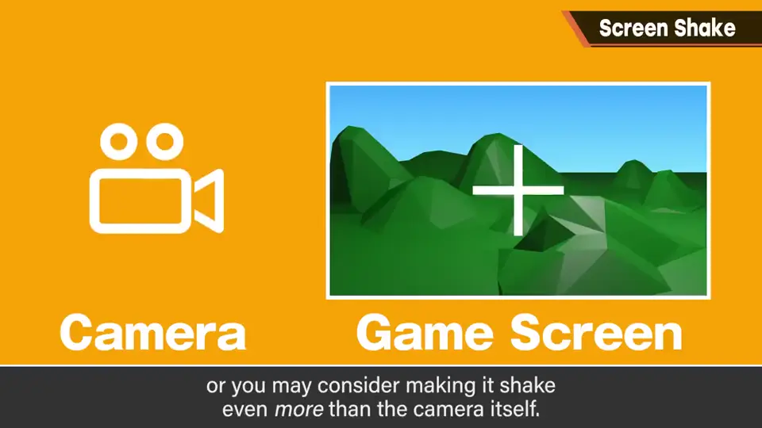
3. 《大乱斗》的震动模式 1:30
一直以来可设定大、中、小、极小以及持续等模式。大中小不只是缩放，震动模式本身也不同。
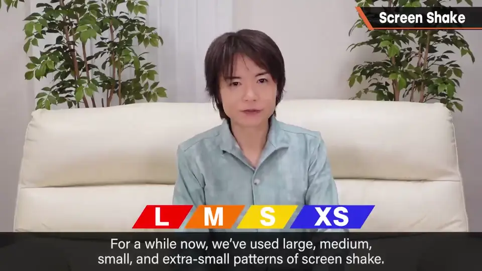
- 小：只有纵向震动。中：加入横向。大：更强。
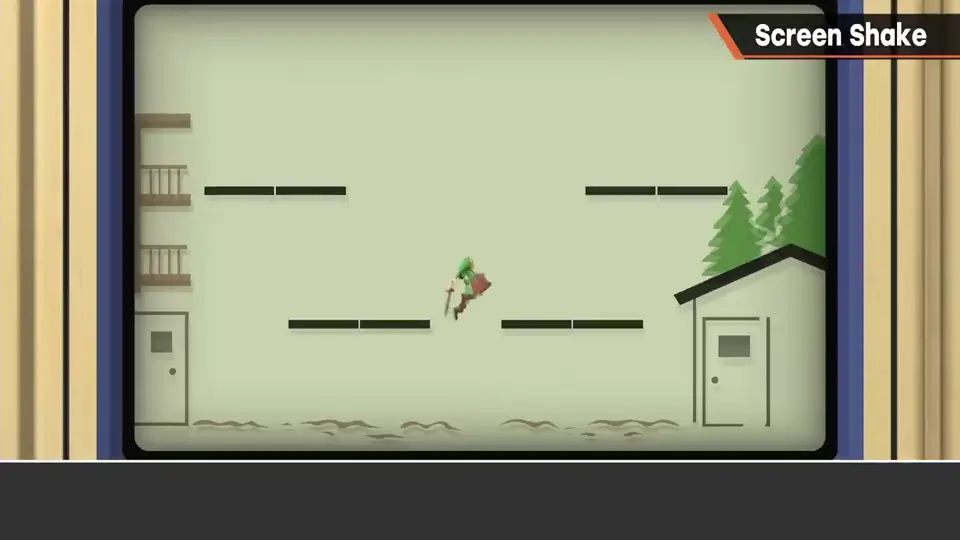
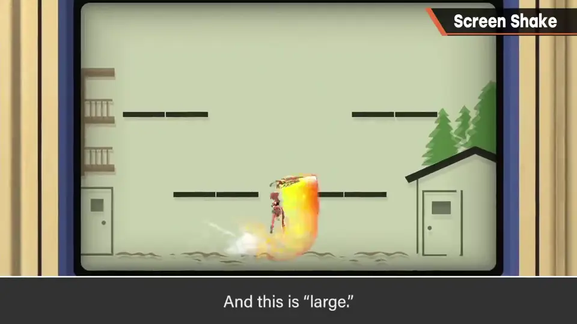
- 持续性震动：传达地形震动等的纵向震动——地震之类最好不要纵横乱晃。
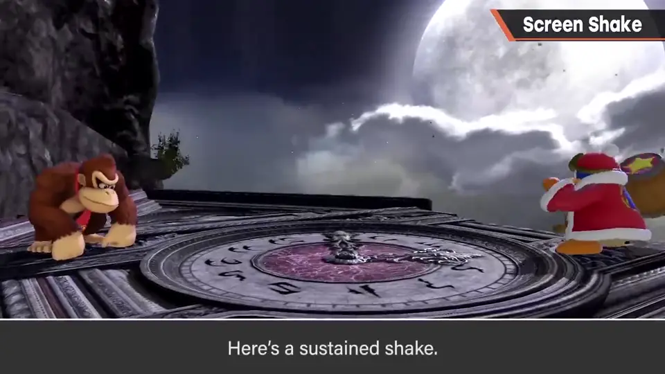
4. 实现上的功夫 2:15
按镜头远近改变震动大小；为了没有违和感也会影响画角，调整到哪里都恰到好处。
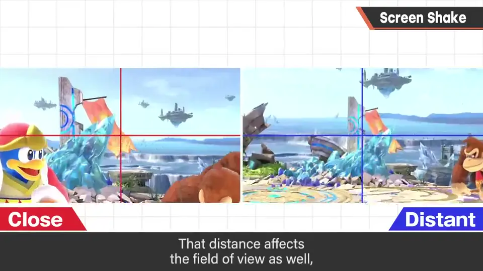
平面世界等画角很窄的舞台，直接用震动会过大，所以要调整。
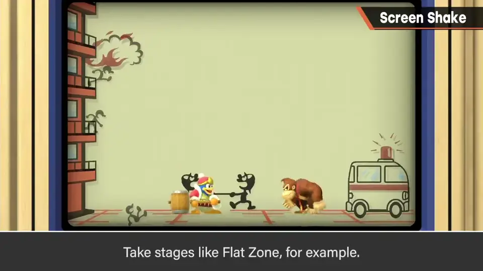
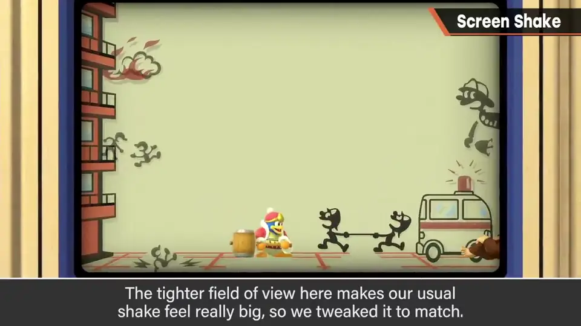
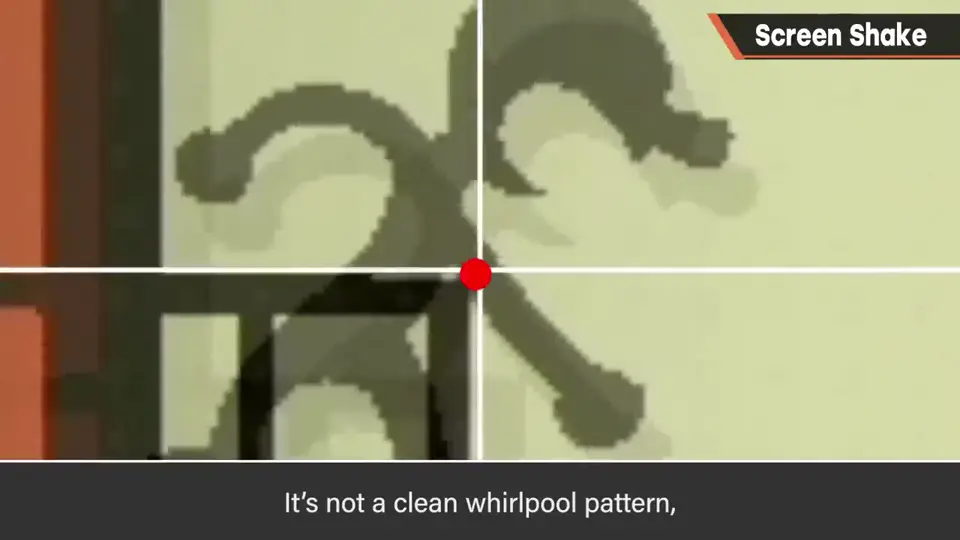
5. 没有震动就乏味 2:58
没有画面震动的游戏相当乏味——连攻击时的小震动都会造成这么大的印象差。
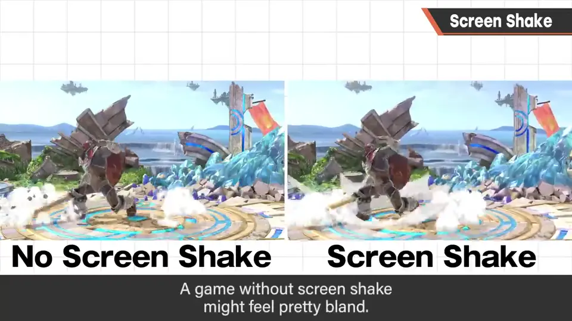
自测题
1. 两种画面震动方法各有什么缺点？
移动摄像机：远景几乎不动；移动绘制后画面：边缘可能露出黑边。 0:54
2. 《大乱斗》的大中小震动只是缩放吗？
不是，震动模式本身不同：小只纵震，中加入横震。 1:48
3. 为什么要按镜头远近调整震动幅度？
画角不同时同样的震动观感不同，例如平面世界画角窄会震得过大。 2:33